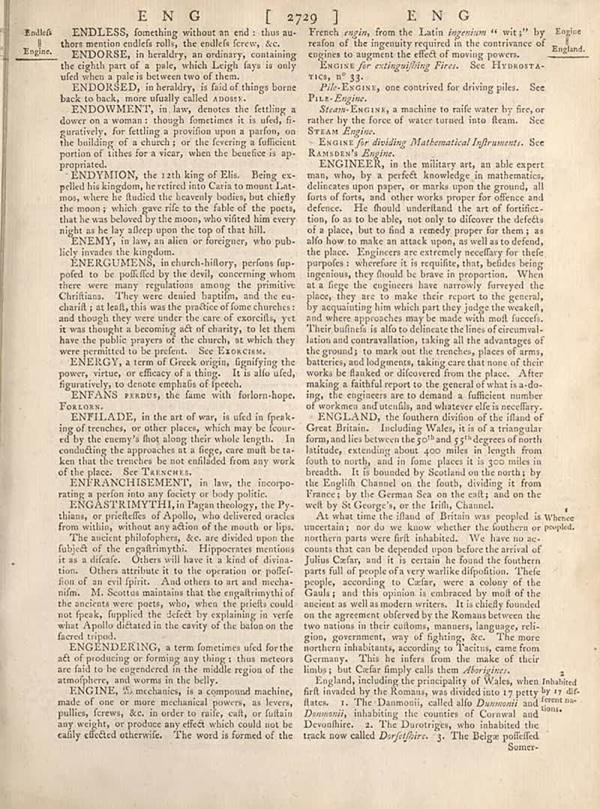

page-0523-a583606e375a.jpg

Page ID: britannica:309f765b1ecc83e0a7f7762e44b4a927a7555443:train:523
Running head: EN G [ 2729] E N G
Image SHA-256: a583606e375ad92d79af8ad8b4fabc4fa22632e6ccbeea6e20f0fa47a27e2858

EN G [ 2729] E N G [Page-header]
Englos ENDLESS, fomething without an end: thus au- thors mention endlefs rolls, the endlefs frewy &. ENDORSE, in heraldry, or ordinary, containing the eighth of a pale, which Legie faya is only ufel when a pale at between two of them. ENDORSED, in heraldry, is faid of things borne back to back, more finally called hours. ENDOWWERT, in law, denotes the fetting a dower on a woman : though femetimes it is ufed, fi- guratively, for fetting a provilion upon a parison, on the building of a cahrul; or the foresee a sufficient portion of tithes for a viera, when the benefice is ap- propagated. ENDYMON, the 1zth king of Elia. Being ex- pelled his kingdom, he retired into Caria to mount Lat-mos, where he fluded the bewenly bodies, but chiefly the moo's which gave rise to the false of the poets, that he was beloved by the moo, who visited him every night as he lay alleep upon the top of that hill. ENEM In law, an alien or foreigner, who pub- lied invades the kingdom. ENERGUMENS, in church-hitory, perfons lip- pdfet to be purified by the devil, concerning whom there were regiments among the primitive Christians. They were denied baptirn, and the eu- charifit at held, this was the practice of from students: i and thought they were under the care of exercils, yet it was thought a becoming act of charity, to let them have the public prayers of the church, in which they were permitted to be prefect. See Exgressions. ENERGY, a term of Greek origin, fignifying the power, virus, or efficacy of a thing. It is alfo ufed, figarratively to denote emplain of epected. ENFANS RADS, the time with folorn-hope FORONS. ENTILADE, in the art of war, is ufed in freak- ing of treencies, or other places, which may be four- ed by the enemy’s first along their whole length. In concluding the approaches at a large, care and be a ken than the trenches be not confined from any work of the place. See TANSWE. ENFRASHISEMENT IN law, the incorpo- rations a perlon into any history or body politic. ENGASTRIMYTHI, in Pagan theology, the Py- thins, or profiledles of Apollo, who delivered oracles from within, without any action of the mouth up lips. The ancient philophers, &. are divided upon the fullyelt of the engathyrthd. Hipporcentes mentions is as a idiction. Others will have to kind of strin-tion. Others attribute it to the operation or polefi- tion of an evil finite. And others to antal mecha- nim. M. Scotts maintains that the engathrhythm of the anciens were poets, who, when the prisels could not fpeks, fupplied the defect by explaining in verfe what Apollo dictated in the cavity of the balon on the farced tripod. ENGENDERING, a term fometime ufed for the act of probobeing or forming any hinge: thus mettors are fail to no congested in the middle region of the atmophores, and worms in the belly. ENGINE, Sì mechanics, its a compound machine, made of one or more mechanical powers, as levers, pullies, ferws, &. in order to raise, cat, or fulanany any weight, or produce any effect which could not be easily effected otherwise. The word is formed of the French reign, from the Latin ingeniums witst by England reafon of the ingenuity required in the contrivance of engines to augment the effect of moving powers. ENGINS for extingufliling Fires. See HYBROSTA- tics, n°3 Pile-EgGins, one convirted for driving piles. See Pix- Engine. States Engins, a machine to raife water by fire, or rather by the force of water turned into fleam. See States Engine. Ensings for dividing Mathematical Infrements. See Ramadern’s Engine. ENGINEEN, in the military arts, an able expert man, who, by a perfect knowledge in mathematics, delineates upon paper, or marks upon the ground, all sorts of forms, and other works proper for officers and defence. He should understand the art of artifici- tion, lo as to be abb, not only to discover the defects of a place, but to find a remedy proper for them. as allow how to make an attack upon, as well as to defend, the place. Engineers are extremely excellentry for these purposes: wherefore it is requisite, that, besides being egrenions, they should be brave in proportion. When itats farge the engineers they nurtively foreged the place, they are to make their report to the general, by acquainting him which part they judge the workelf, and where approaches may be made with much facets. Their bulind is also to delineate the lines of circumval-lation and countervaltions, taking all the advantages of the ground, to mold out the treaches, places of arms, batteries, and Indigenous, taking care that none of their works be flanked or discovered from the place. After making a faithful report to the general of what isa-do- ing, the engineers are to demand a sufficient number of workers and uncolls, and whatever else is necellary. ENGLAND), the founder division of the illand of Great Britain. Including Wales, is at a triangular form, and lies between the 50^ and 55^ degrees of north latitudes, extending about 400 miles length from fourth to north, and in the place, it is 300 miles in breadth. It is bounded by Scotland on the north; by the English Channel on the fourth, dividing it from France by the German Sea on the city; and on the well by St George's, or the Irish, Chanel. At what time to illand of British was people is Where ancestors, nor do we know whether the members or people, northern parts were first inhabited. We have no ac- cousas that can be depended upon before the arrival of Jullou Cedar, and if to certain he found the Southern parts full of people of a very warlike dipofotion. Tehe people, according to Cedar, were a colony of the Guidy, and that opinion is embraced by most of the ancient as well as modern writers. It is slightly founded on the agreement obtered by the Roman between the two nations in their cultures, manners, language, rell- gion, government, way of fighting, &. The more northern inhabitants, according to Tactics, came from Germany. This he inferen from the make of their limbs, but Cedar family calls them _Aborigians_. England, including the principality of Wales, when inhabited it invaded by the Romans, was divided into a petty by six dir flatter. 1. The Damonnic, called allo Duronomi and green ins- domonic, Danoniis, inhabiting the counties of Cornwall and Devonliire. 2. The Darotriges, who inhabited the track now called _Derjefihrs._ 3. The Belge poffelled Somer-